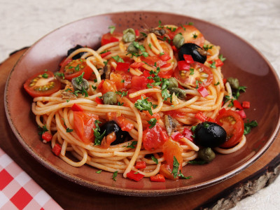

Spaghetti alla Puttanesca

Description
Spaghetti alla puttanesca is a pasta dish invented in Naples in the mid-20th century and made typically with
tomatoes, olives, capers, anchovies, garlic, peperoncino, extra virgin olive oil and salt.
Ingredients
- 200 g spaghetti
- 2 tablespoons extra virgin olive oil
- 2 garlic gloves
- 3 anchovy fillets
- 30 g pitted black olives
- 1 tablespoon capers
- 1/4 tablespoon chilli flakes
- 400 g can crushed tomatoes
- 125 ml water
- 1 teaspoon fresh oregano
- 0.13 teaspoons salt
- 0.13 teaspoons black pepper
- 1/4 teaspoon sugar
- 2 tablespoons fresh basil
Steps
- Bring a large pot of water to the boil, ready for the pasta
- Heat olive oil in a medium skillet over medium high heat. Add garlic and cook for 15 seconds until it starts
turning golden.
- Add anchovies, capers, olives and chilli flakes. Cook for 1 minute.
- Add tomato, then add 1/2 cup of water into the can. Swirl around to rinse then pour into the skillet.
- Add oregano, salt, and pepper. Stir, bring to simmer, then turn down to low and cook over medium heat for 10
minutes or until the tomato has broken down and created a sauce. Turn off stove when ready if not timed with
cooked pasta.
- Meanwhile, add 2 teaspoons salt into the pot of water. Then add pasta and cook per packet directions.
- Just before draining, scoop out a mugful of pasta cooking water and set aside. Then drain pasta in a colander.
- Immediately add pasta into sauce. Add 1/4 cup of pasta cooking water reserved from previous step, then use 2
wooden spoons to toss the pasta, still on a low stove, for 1 minute or until the sauce is no longer in the skillet
but rather clinging to the pasta strands (but still slick and slippery). If the pasta gets too dry, add more pasta
cooking water and toss.
- Immediately transfer into warmed bowls. Drizzle with olive oil, sprinkle with basil. Serve immediately!